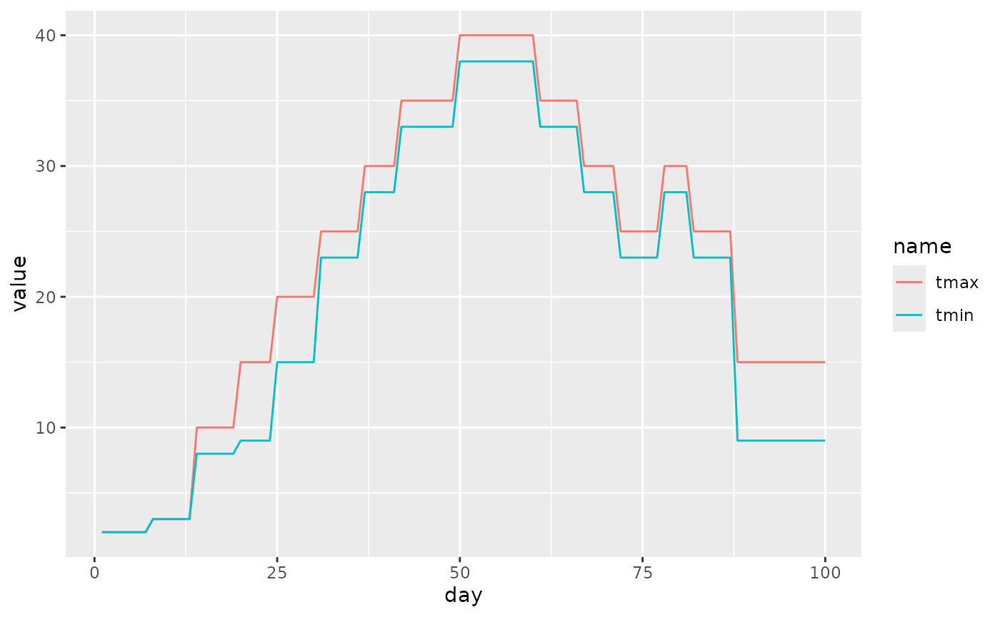
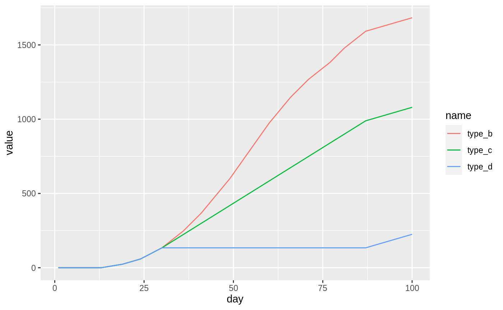

vignettes/gdd.Rmd
gdd.RmdGrowing degree days (GDD) are a measure of heat accumulation used to predict plant and animal development rates. It can be, however, calculated using several approaches. The pollen package allows for three different versions of the GDD calculations. The goal of this vignette is to describe and show examples of calculating GDD using different methods.
Let’s start with attaching a set of package used in this vignette:
Next, we will use the gdd_data dataset - a data frame with three columns:
day - this could be a date in real datatmax - this value would represent a maximum temperature in real datatmin - this value would represent a minimum temperature in real data
data("gdd_data", package = "pollen")
head(gdd_data)
#> day tmax tmin
#> 1 1 2 2
#> 2 2 2 2
#> 3 3 2 2
#> 4 4 2 2
#> 5 5 2 2
#> 6 6 2 2We can vizualize the gdd_data dataset using the ggplot2 package:
df_plot1 <- pivot_longer(gdd_data, tmax:tmin)
p1 <- ggplot(df_plot1) +
geom_line(aes(day, value, color = name))
p1
The pollen package allows for calculations of growing degree days (GDD) using the gdd() function. This function accepts up to five arguments:
tmax - daily maximum temperaturetmin - daily minimum temperaturetbase - base temperaturetbase_max - maximum base temperaturetype - type of the GDD calculations. Either “B”, “C”, or “D”. The default is “C”.The last argument is inspired by the article by Baskerville and Emin (1969) (see Figure 1 in the mentioned paper).
"B" - The heat units are calculated based on the difference between the mean daily temperature and the threshold (tbase). In the case when the value of tmin is lower than tbase, then it is replaced by tbase
"C" - same as type "B" and when the value of tmax is larger than tbase_max, then it is replaced by tbase_max
"D"- same as type "B" and when the value of tmax is larger than tbase_max, then no heat units are added
gdd_data$type_b <- gdd(tmax = gdd_data$tmax, tmin = gdd_data$tmin,
tbase = 5, type = "B")
gdd_data$type_c <- gdd(tmax = gdd_data$tmax, tmin = gdd_data$tmin,
tbase = 5, tbase_max = 20, type = "C")
gdd_data$type_d <- gdd(tmax = gdd_data$tmax, tmin = gdd_data$tmin,
tbase = 5, tbase_max = 20, type = "D")
head(gdd_data)
#> day tmax tmin type_b type_c type_d
#> 1 1 2 2 0 0 0
#> 2 2 2 2 0 0 0
#> 3 3 2 2 0 0 0
#> 4 4 2 2 0 0 0
#> 5 5 2 2 0 0 0
#> 6 6 2 2 0 0 0Finally, let’s compare these three types:
df_plot2 <- pivot_longer(gdd_data, type_b:type_d)
p2 <- ggplot(df_plot2) +
geom_line(aes(day, value, color = name))
p2
The above figure clearly shows that the selection of the calculation method (type) can make a large difference in the output values. Therefore, it is crucial to select the type and other parameters (tbase and tbase_max) that are appropriate for the studied phase in the plant or animal development.
Baskerville, G., & Emin, P. (1969). Rapid Estimation of Heat Accumulation from Maximum and Minimum Temperatures. Ecology, 50(3), 514-517. https://doi.org/10.2307/1933912